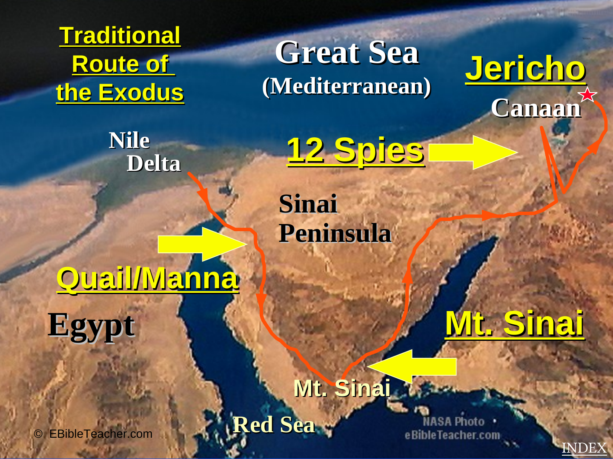

Children & families
Short explanations, games, visual routes and memory challenges.
Explore places, journeys, empires, worship spaces and New Testament mission through a modern visual learning experience built for every age—and welcoming to every curious visitor.

Choose a pathway based on how you learn best. Geography stays connected to Scripture, history and clear source notes.
Move across the Mediterranean, Canaan, Egypt, Mesopotamia and Asia Minor. Filter places by era and inspect references.
Open the atlas →
Follow the journey from the Mesopotamian world through Haran toward Canaan and Egypt.
Follow the route →
Study the traditional regional route with uncertainty clearly labeled.
Explore the Exodus →
Connect Acts, cities, missionary routes and the New Testament letters.
Enter Paul's world →The experience is Christian in identity without requiring visitors to share Christian belief. Historical context, biblical references, tradition and interpretation are kept distinguishable.
Short explanations, games, visual routes and memory challenges.
Timeline structure, discussion prompts, quizzes and map activities.
Clear uncertainty labels, source boundaries and careful historical framing.
Respectful access to biblical geography and Christian interpretation without caricaturing other beliefs.
Use active learning tools to reinforce places, routes, events and themes.
The website is a modern re-presentation of the supplied Bible Class Atlas material. Source visuals are used selectively; the interface, learning architecture, interactions and most explanatory copy are newly created.